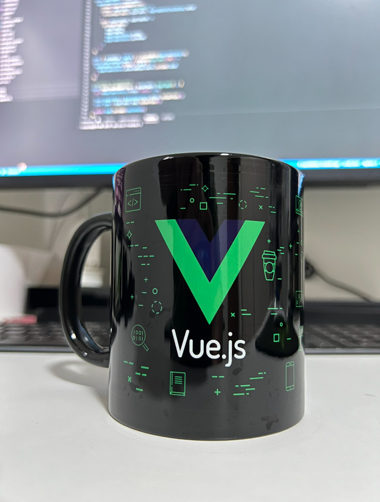

Amazing Vue Article
Vue.JsVue. Js is a popular JavaScript framework used for building user interface it was designed to be approachable and intutive,while also being powerful enough to handle. in this article, we'll explore the key features and benefits of Vue.Js and why it's a great choice for building modern web applications.
VUE.JS
Vue.Js was created by EVAN YOU in 2014 and has since become one of the most popular JavaScript frameworks, alongside REACT and ANGULAR. Vue.Js is often referred to as the "Progressive framework" because it can be used for small or large-scale applications, and can easily integrated into existing projects... Vue.js is powerful and flexible JavaScript framework that's well-suited for building modernweb applications. its template-based syntax, component-based architecture, reactive data binding, and robust state management system make it great choice for building complex and scalable applications. with it's large and active ecosystem of tools and libaries, Vue.js is a great choice for developers of all skill levels.
Vue.js uses a template-based syntax, which makes it easy to declaratively render user interfaces. This syntax is similar to HTML and makes it easy to understand and work with.